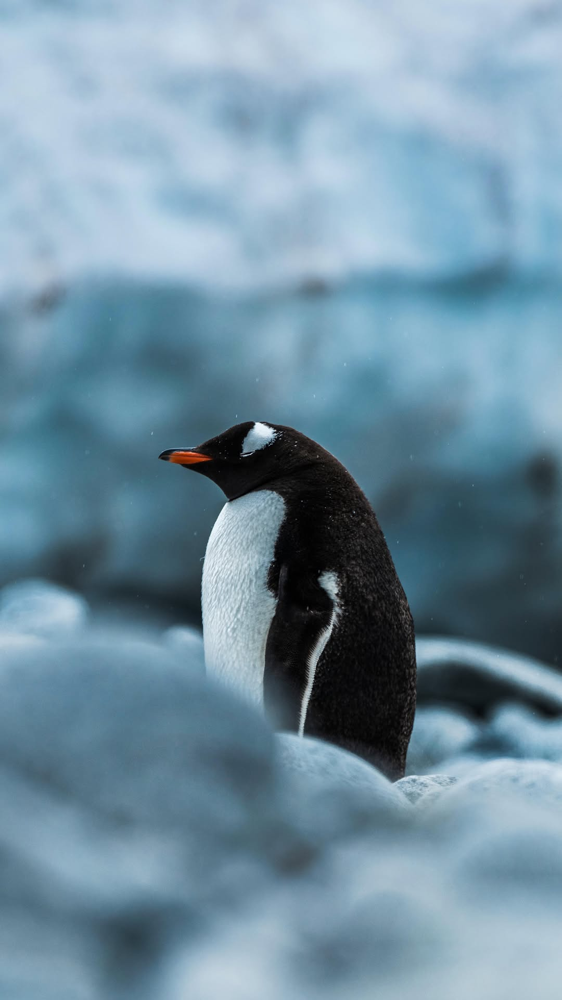
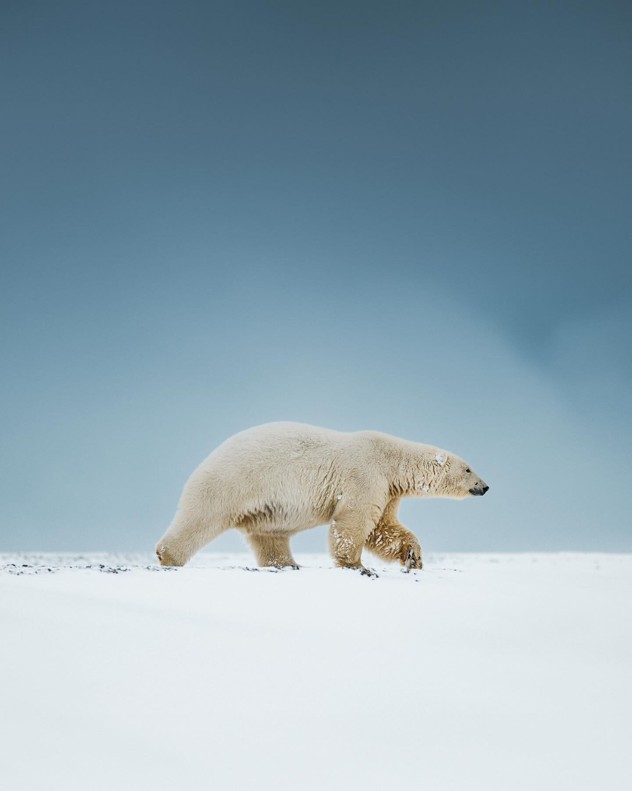
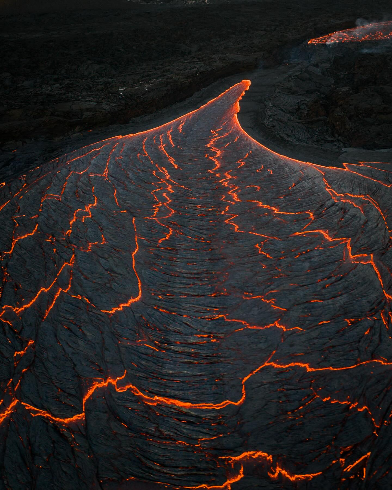

25/04/25
From day to night in Uummannaq, West Greenland. Exploring the frozen sea ice landscape around the island by dogsled really made me feel the remoteness of this area. We had heard of a towering iceberg far out in the fjord, but the mission to reach it left us fighting for time to make it back before a storm hit the area. We almost made it when the wind began to warn us of what’s coming, so we turned back. Luckily I could send the drone the rest of the way to photograph the towers. When the weather eventually rolled in, it was so intense we stayed inside for a couple of days. The Arctic is full of challenges and surprises, you just have to work with the conditions you are given by nature and let the story play out in its own way.Blog

12/04/25
Cruising on the Gentoo penguin highway. One of the most memorable parts of exploring the Antarctic peninsula is seeing (and smelling) the penguin rookeries scattered around the landscape. The gentoos often create these paths through the ice which all of them tend to follow. It doesn’t go down well when one decides to stop

08/04/25
An encounter I’ll never forget. We came across this male Polar Bear on the north coast of Svalbard, climbing down from the snowy cliffs to reach a whale carcass on the shoreline. I remember the water being so clear that we could see the whale bones on the sea floor. This bear seemed to be diving down to grab the bones, which was a surreal sight from the zodiacs.

28/03/25
Textures of the Reykjanes peninsula. Today, a very short-lived eruption began in Sundhnúkagígar, just north of the town Grindavík. The activity stopped after just a few hours, and there have since been earthquakes felt around the peninsula. The magma is on the move, a sign of just how alive nature is here.